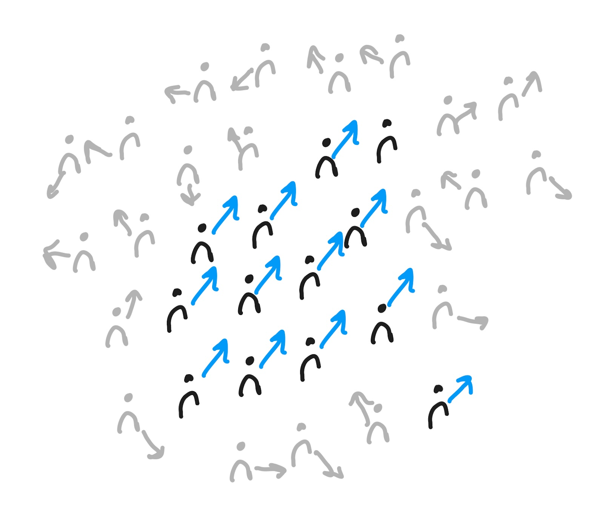
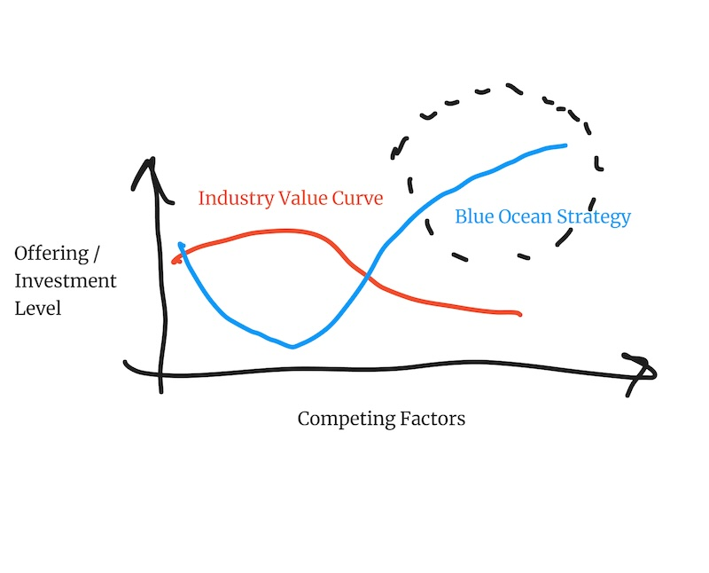

Product Primer
A Starter Guide to Building Great* Products (*great is not always successful)
Introduction
Welcome to Product Primer – A Starter Guide to Building Great Products* (*great is not always successful).
The primer presents a collection of theoretical frameworks and practical methods for product development,
integrating diverse perspectives from technology, creativity, and business strategy. It challenges the conventional notion
that a great product is automatically a successful one. Instead, it focuses on what's in your control - empowering
you build great products that serve a purpose and solve real problems.
The perspectives and advice offered in this primer are highly opinionated,
drawn directly from the author's extensive experience in product building.
Whether you're a seasoned professional or just starting out, this guide is designed to provoke thought,
inspire innovation, and ultimately assist you in crafting products that aim to make a difference.
What is the purpose of the product?
Finding the key value proposition
From user needs to market understanding
Ultimately, every single product can be reduced to a specific user need, and hence to an individual user.
To increase the chances of making a succesful product, you need to find out if there is a critical amount of users
that have a specific need, which can be better met with your product, and isn’t served well enough with anything else out there.
Chances here though are against you - there is already very likely a product or a solution the user is equipped
with to tackle their problems and to fulfill their needs.
The space where you are working in, could be anything from enhancing the mobile experience for brick and mortar stores
selling to online marketplaces, building a platform for short form content creators or building tools
to organize the work for reachtstack drivers in a container ship terminal. Whatever the context is,
your intended product will be competing with existing ways of working, established habits
and products already available at the market - be it your own or your competitors.

Is there a large enough audience for my product, which is currently underserved in the market?
Can my product offer them something that isn’t offered by anything else out there?
Is the product compelling enough to get large enough audience rallying behind my product?
Finding the unique value proposition for your product that fits the current market is essential.
Finding the Unique Value Proposition
Frameworks, like the Blue Ocean / Red Ocean strategy framework, or the work of Clayton Christensen on Innovators Solution,
help you frame your product idea and solution against that existing world, where your users are interacting with existing solutions.
What are the elements of my product that are directly competing against the existing market?
What are the users' existing expectations from a product in the market? What are the elements of my product
that provide value other products currently can’t?
Focusing on the current users, their current needs and how the existing product solves those problems,
you may end up iterating on the existing products or offerings - and end up competing with similar,
but better features or with a cheaper solution, but fail to look beyond what are the unmet
needs and potential to create new innovations.

Blue Ocean strategy framework helps you identify where the current industry competition and investments are the highest -
where you should do the minimal investments to offer a minimal level of service, and instead put most of
your investments into the areas of your product where you create value beyond what is currently available in the market.
Alternatively, if you can't find that competitive edge from your product, chances are users will not choose your product
over the one they already use.
This is the part in product building which is usually referred to "finding the product-market-fit". To make a dent in the world
with your product, you need to understand the world and the market where your prouduct operates.
Example of a blue ocean strategy from the video streaming space: Founders of Twitch recognized that gamers had unique
needs not met by the then existing incumbent video streaming services, such as YouTube. YouTube was built for video
content creators with the mindset that you first record the content, then publish it, and then engage with it. And
how YouTube was built and operated, and how the content was monetised, was based on this core idea.
Twitch on the other hand focused on the real-timeness of the video streaming and audience engagement experience, including the live chat.
All of this was enabled by new technologies that made real-time livestreaming possible. Twitch also introduced new subscription
models and donation systems that enabled the content creators to monetise their audience
in a completely new way compared to the incumbent platforms at the time. Essentially Twitch built a platform tailored to
live gameplay, where the audience could interact in real time. This focus allowed them to bypass the crowded
and competitive mainstream streaming market. While YouTube continues to be the largest video streaming platform,
Twitch has created a sizable business from capturing the audience in the live streaming market,
making it the billion dollar business it is today.
Key Takeaways
Your product does not operate in a vacuum. Users have needs - which are already solved by one way or the other.
Find out what is the minimum you need to invest to match the existing solutions and
put most of your bets in the competing factors other solutions don’t offer.
Inspiration and Further Reading:
- Clayton Christensen - The Innovator's Solution: Creating and Sustaining Successful Growth
- W. Chan Kim. Renee Mauborgne - Blue Ocean Strategy: How to Create Uncontested Market Space and Make Competition Irrelevant